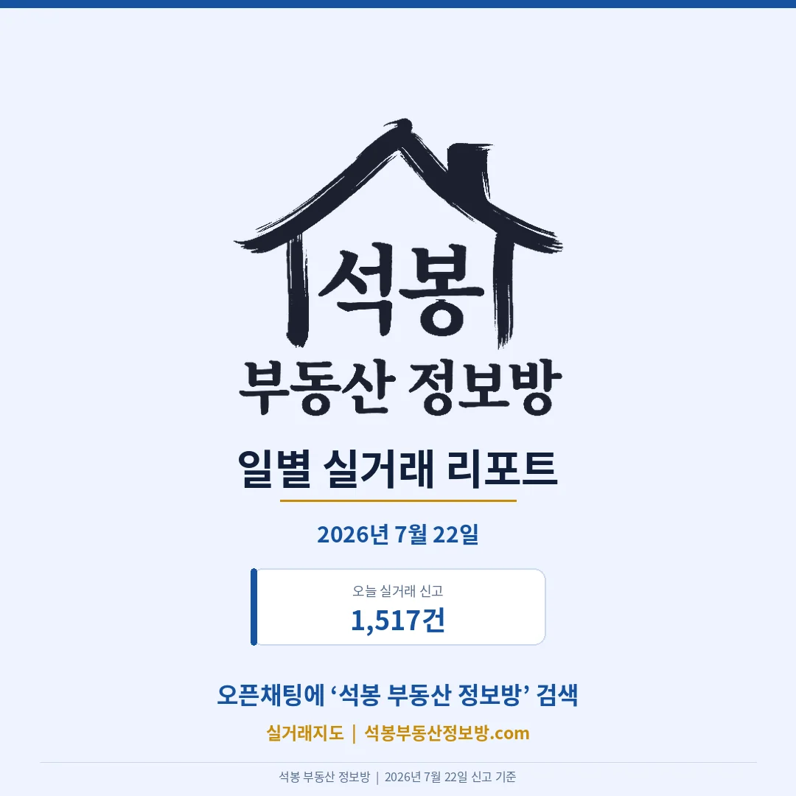
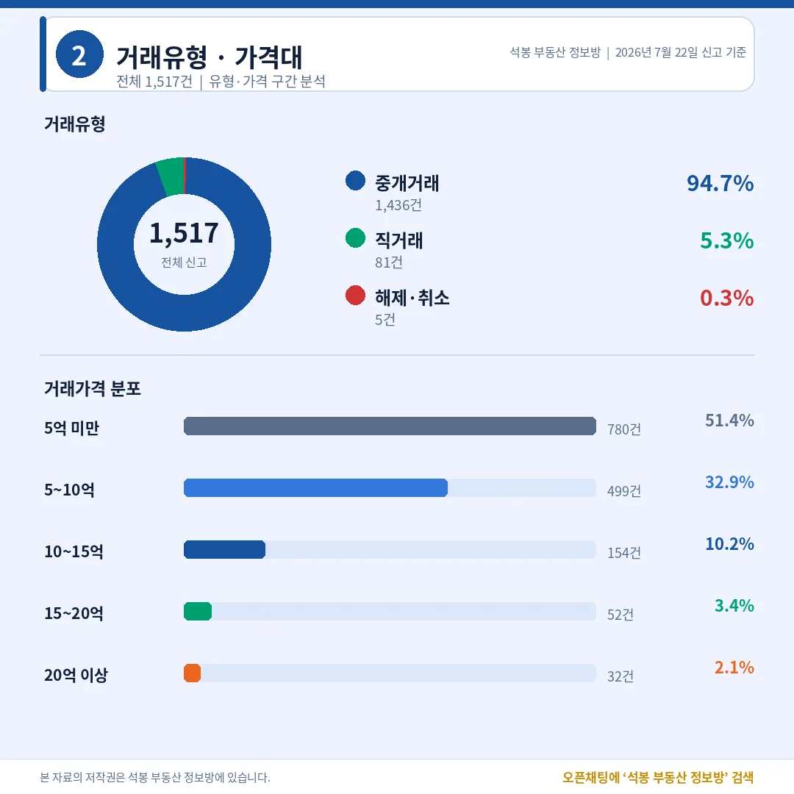
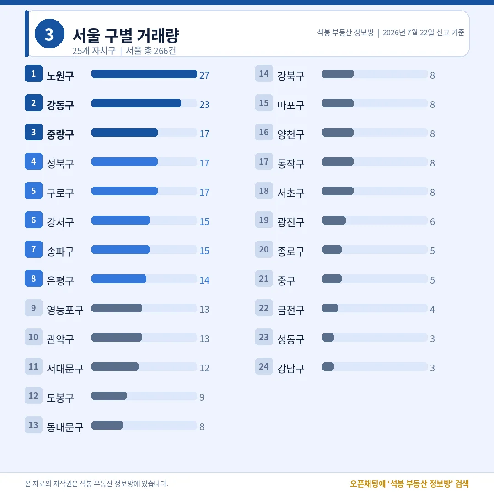
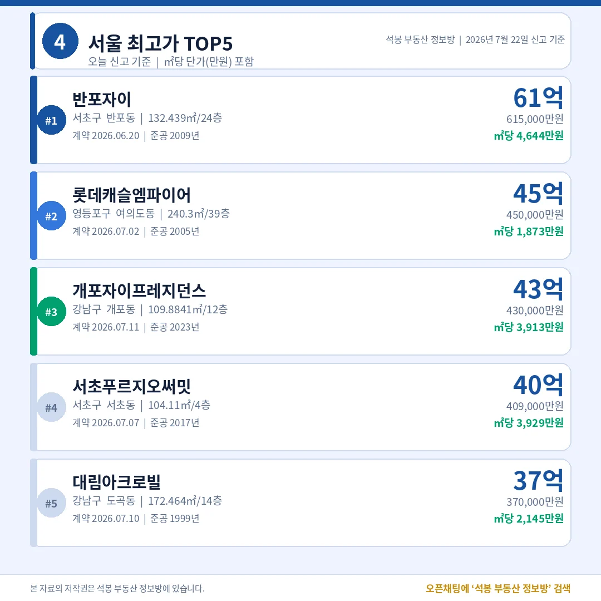
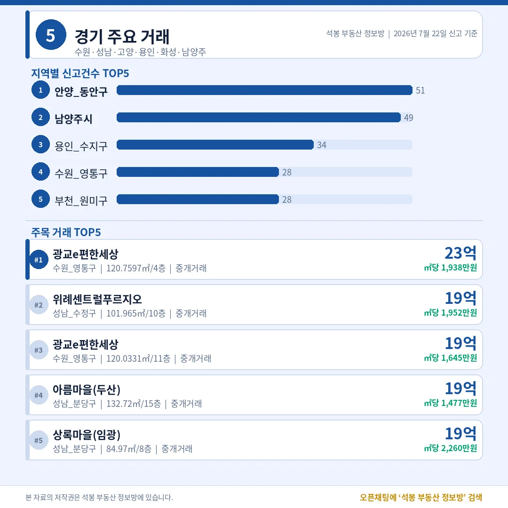
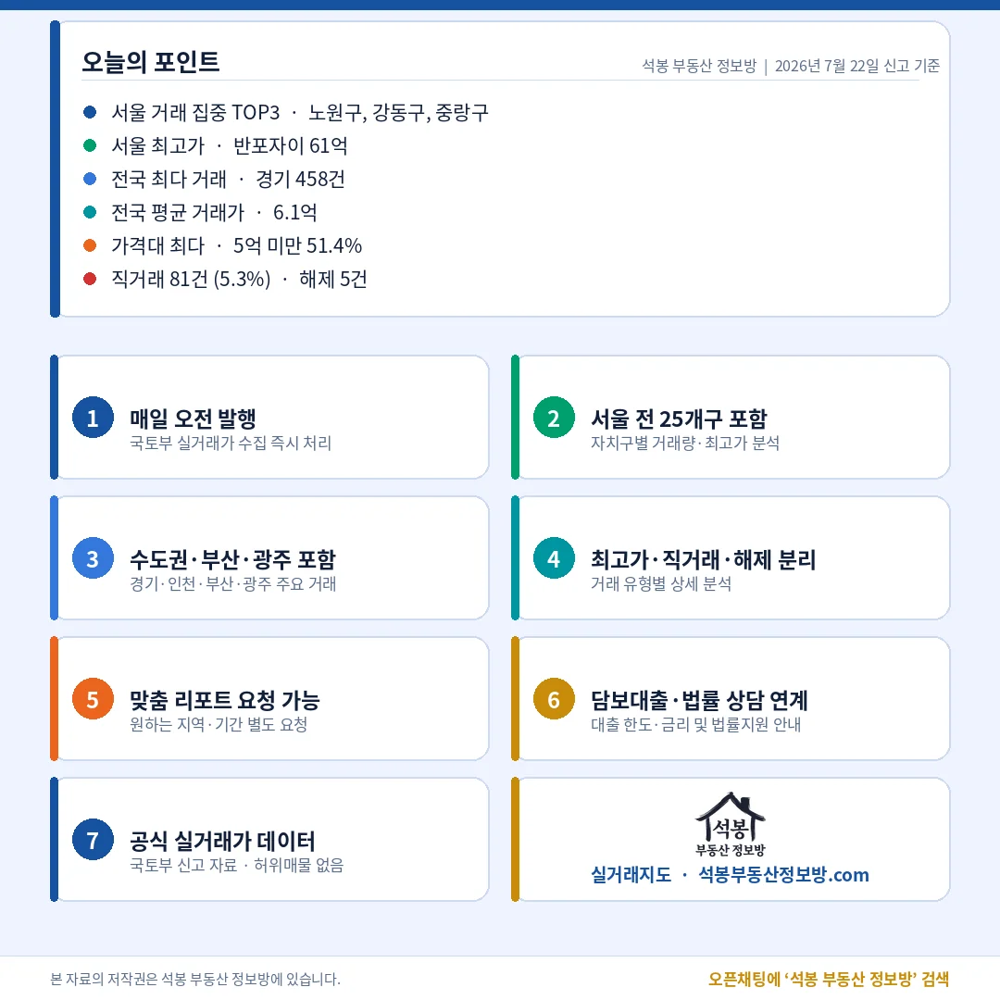

오늘 전국에서 아파트 1,517건이 실거래로 신고됐습니다. 수요일치고는 평이한 물량입니다. 서울 최고가는 서초구 반포동 반포자이 61.5억이 찍었는데, 정작 거래가 몰린 곳은 노원구와 강동구 같은 중저가 지역이었습니다. 가격표 맨 윗줄과 거래량 상위가 서로 다른 동네를 가리킨 하루였습니다.
오늘 시장 한눈에: 5억 미만이 절반, 평온한 수요일

전체 1,517건 가운데 중개거래가 1,436건(94.7%), 직거래(중개사 없이 당사자끼리 한 거래)는 81건(5.3%)이었습니다. 해제·취소는 5건(0.3%)에 그쳤습니다. 특정 단지를 한꺼번에 몰아 넣는 벌크 신고 같은 왜곡 요인이 보이지 않아, 오늘 수치는 시장의 평소 체온에 가깝습니다.
가격대를 보면 5억 미만이 780건(51.4%)으로 절반을 넘겼고, 5~10억이 499건(32.9%)으로 뒤를 이었습니다. 둘을 합치면 84%가 넘습니다. 열 건 중 여덟 건 이상이 10억 아래에서 손바뀜한 셈입니다. 10~15억은 154건(10.2%), 15~20억 52건(3.4%), 20억 이상은 32건(2.1%)이었습니다. 뒤에 나올 60억대 초고가가 헤드라인을 가져가도 시장의 몸통은 여전히 중저가에 있다는 게 숫자로 확인됩니다.
어디서 거래됐나: 서울은 다시 노원·강동, 강남은 조용

시도별로는 경기 458건이 전국 1위였고, 서울 266건, 부산 113건, 인천 110건, 경남 81건 순이었습니다. 수도권(서울·경기·인천) 비중은 55.0%로 딱 절반을 조금 넘겼습니다.
서울 안에서는 노원구 27건이 1위, 강동구 23건이 뒤를 이었고 중랑·성북·구로가 나란히 17건이었습니다. 반대로 강남구는 3건, 서초구는 8건에 그쳤습니다. 거래량 지도만 놓고 보면 강남권이 거의 비어 있는 하루입니다. 노원 27건은 공릉·상계·중계·월계 네 개 동에 고르게 흩어졌고, 가장 많이 팔린 단지도 2건에 그쳐 특정 단지 쏠림은 없었습니다. 지난주 데일리(7월 17일)와 주간 결산(7월 20일)에서 노원의 실수요 흐름을 짚어드렸는데, 규모는 그때보다 줄었어도 중저가 실수요가 서울 거래를 끌고 가는 구도는 이어지고 있습니다.
오늘의 최고가: 반포자이 61.5억, TOP5는 강남권과 여의도

오늘 서울 최고가는 서초구 반포동 반포자이 전용 132.44㎡(24층), 61.5억이었습니다. 2009년 준공으로 만 16년 된 준신축이고, ㎡당 4,644만원입니다. 재건축 연한이 한참 남은 단지가 60억을 넘긴 것이라, 오늘 최고가는 노후 재건축 기대보다 대형 평형 실물 가치에 무게가 실린 거래입니다.
2위는 영등포구 여의도동 롯데캐슬엠파이어 45.0억(전용 240.3㎡, 2005년 준공), 3위는 강남구 개포동 개포자이프레지던스 43.0억(109.88㎡, 2023년 신축), 4위 서초구 서초푸르지오써밋 40.9억(104.11㎡, 2017년), 5위 강남구 도곡동 대림아크로빌 37.0억(172.46㎡, 1999년)이었습니다. 거래량에서는 조용했던 강남·서초가 가격표 상단은 그대로 차지했고, 여의도 대형 한 건이 그 틈을 비집고 들어왔습니다. 준신축과 3년차 신축, 20년 넘은 대형 구축이 한자리에 섞인 점도 눈에 띕니다.
수도권 밖은 어땠나: 경기·인천·부산·광주

전국 1위 경기(458건)에서는 수원 77건, 안양 72건, 용인 58건, 남양주 49건, 고양 47건 순으로 신고가 많았고, 최고가는 수원 영통구 이의동 광교e편한세상 23.4억이었습니다. 인천(110건)은 최고가가 서구 청라동 대우푸르지오 13.9억, 부산(113건)은 해운대구 우동 대우월드마크센텀 22.0억으로 지방 전체 최고가를 찍었습니다. 광주(67건)는 남구 봉선동 한국아델리움1단지 16.5억이 가장 높았습니다. 서울 밖에서는 광교·해운대·청라처럼 지역을 대표하는 대형 평형 단지가 상단을 채운 모습입니다. 우리 동네 상세는 카드에서 확인해 보세요.
오늘의 인사이트

오늘 신고분은 거래는 노원·강동, 가격은 반포로 요약됩니다. 강남구 3건, 서초구 8건으로 강남권 거래량은 손에 꼽을 정도였지만, 가격표 맨 위는 반포자이 61.5억이 지켰습니다. 몸통 쪽에서는 5억 미만이 51.4%, 노원 27건을 필두로 강동·중랑·성북·구로 같은 중저가 실수요 지역이 서울 거래를 이끌었습니다. 직거래 5.3%, 해제 0.3%로 착시 요인 없이, 실수요는 중저가에서 넓게 붙고 초고가는 강남권 대형 평형에서 조용히 체결되는 시장의 평소 모습이 그대로 드러난 하루였습니다.
원자료: 국토교통부 실거래가 공개시스템(2026년 7월 22일 신고분) · 편집·제작: 석봉 부동산 정보방 · 본 자료는 정보 제공 목적이며 투자 권유가 아닙니다.